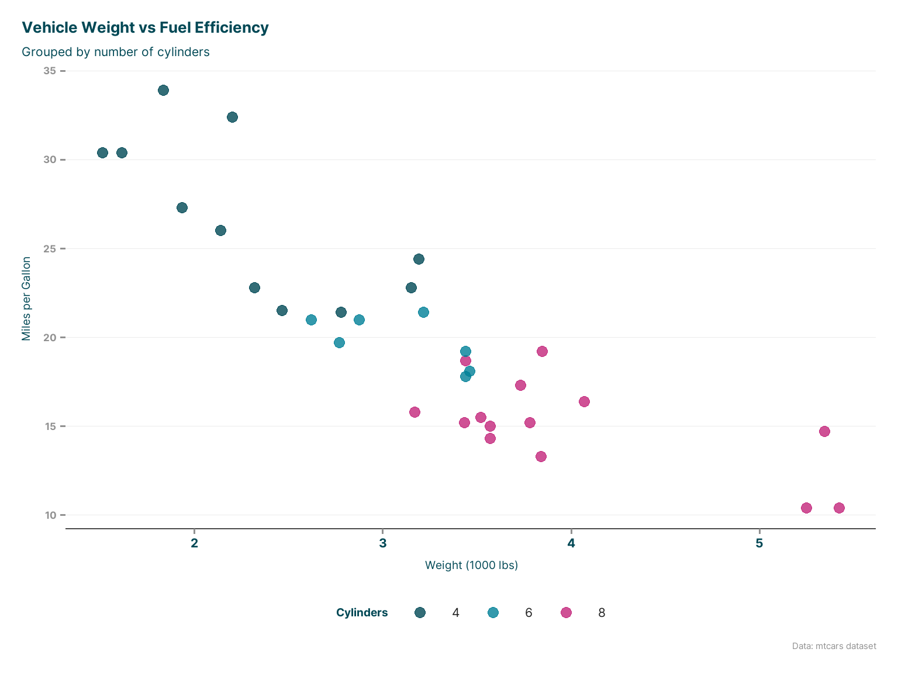

# Install from GitHub (adjust method based on your setup)
# devtools::install_github("childpovertyactionlab/cpaltemplates")
# Or if using renv in your project:
# renv::install("childpovertyactionlab/cpaltemplates")
library(cpaltemplates)Getting Started with cpaltemplates
Essential setup and first steps for CPAL data team workflows
Why Use cpaltemplates?
Before diving into installation, it’s helpful to understand why cpaltemplates exists and when you should use it:
The Problem cpaltemplates Solves
Without cpaltemplates, CPAL data team members often face: - Inconsistent visual branding across reports, presentations, and dashboards - Repetitive setup tasks when starting new analysis projects - Time spent on styling instead of focusing on analysis and insights - Difficulty onboarding new team members to CPAL’s preferred workflows and standards - Inconsistent project structures making collaboration and handoffs challenging
With cpaltemplates, you get: - Instant CPAL branding with consistent colors, fonts, and themes - Automated project setup with modern R best practices built-in - Standardized workflows that make team collaboration seamless - Professional-quality outputs with minimal setup time
When to Use cpaltemplates
| Use cpaltemplates when you… | Skip it when you… |
|---|---|
| Create visualizations for CPAL reports, presentations, or external sharing | Are doing quick, internal exploratory analysis with no sharing |
| Start any new data analysis or reporting project | Are working on non-CPAL projects or personal work |
| Want consistent branding across your work | Need completely custom styling that conflicts with CPAL standards |
| Collaborate with other CPAL data team members | Are prototyping ideas where appearance doesn’t matter |
| Create dashboards or interactive visualizations | Are working with existing projects that already have established styling |
Installation
Install the Package
Why these installation methods? - GitHub installation ensures you get the latest version with newest features - renv integration maintains package version consistency across team projects and prevents dependency conflicts
Verify Installation
# Check that key functions are available
packageVersion("cpaltemplates")[1] '1.7.0'# Test basic functionality
library(ggplot2)
theme_cpal() # Should return a ggplot2 theme objectError in theme_cpal(): could not find function "theme_cpal"What this verification does: Confirms that cpaltemplates is properly installed and that its core theming functionality integrates correctly with ggplot2, which is essential for all CPAL data visualizations.
Essential Setup
1. Set Up Google Fonts
Why fonts matter: Typography is a crucial part of CPAL’s visual identity. Using consistent, professional fonts across all outputs creates cohesive branding and improves readability. Without proper font setup, your plots will fall back to system defaults, which vary by computer and may not match CPAL standards.
When to run this: Execute once per R session, typically at the start of your analysis. If you restart R, you’ll need to run it again.
# Download and register CPAL fonts
setup_cpal_google_fonts()
# This will:
# - Download Inter and Roboto from Google Fonts
# - Register them for use in plots
# - Set up fallbacks for cross-platform compatibilityWhat happens behind the scenes: - Inter font becomes the default for all text elements (clean, modern sans-serif) - Roboto font provides fallback options and specialized use cases - Cross-platform compatibility ensures fonts work on Windows, Mac, and Linux - Caching means fonts are downloaded once and reused
Troubleshooting: If fonts don’t appear to work, it’s usually due to system permissions or network restrictions. The function includes automatic fallbacks to system fonts that are visually similar.
2. View Available Resources
Why explore first: Understanding what’s available helps you make informed choices about colors, themes, and styling options. This prevents the common problem of creating a visualization, then discovering there was a better palette or theme option available.
# See all color palettes
view_cpal_palettes("all")Error in view_cpal_palettes("all"): could not find function "view_cpal_palettes"# View a specific palette interactively
quick_palette()Error in quick_palette(): could not find function "quick_palette"# Check available themes
names(formals(theme_cpal)) # See theme parametersError: object 'theme_cpal' not foundWhat these functions show you: - view_cpal_palettes() displays every color palette side-by-side, helping you choose the right one for your data type and message . - quick_palette() opens an interactive interface to explore individual palettes, see color codes, and test accessibility. - Theme parameters show you all the customization options available for fine-tuning your visualizations.
Your First CPAL-Styled Plot
Why start with a complete example: Seeing immediate results builds confidence and demonstrates the value of cpaltemplates. This example incorporates the most commonly used functions and produces a professional-quality output.
library(ggplot2)
library(cpaltemplates)
# Ensure fonts are set up
setup_cpal_google_fonts()Setting up CPAL Google Fonts...
Setting up fonts for regular plots...
Inter downloaded and registered
Roboto downloaded and registered
Showtext enabled for regular plots
Setting up fonts for interactive plots...
Inter registered for interactive plots
Roboto registered for interactive plots
CPAL Google Fonts setup complete!
Primary: Inter | Secondary: Roboto# Create a sample plot
p <- ggplot(mtcars, aes(x = wt, y = mpg, color = factor(cyl))) +
geom_point(size = 3, alpha = 0.8) +
scale_color_cpal(palette = "main") +
theme_cpal() +
labs(
title = "Vehicle Weight vs Fuel Efficiency",
subtitle = "Grouped by number of cylinders",
x = "Weight (1000 lbs)",
y = "Miles per Gallon",
color = "Cylinders",
caption = "Data: mtcars dataset"
)
# Display the plot
print(p)
# Save with CPAL standards
save_cpal_plot(p, "my_first_cpal_plot.png")Breaking down what each piece does:
scale_color_cpal(palette = "main"): Applies CPAL’s primary color palette to the points. This ensures your categorical variables use colors that are visually distinct, accessible to colorblind users, and consistent with CPAL branding.theme_cpal(): Transforms the overall appearance to match CPAL standards - adjusts fonts, grid lines, background, spacing, and text sizes for professional presentation quality.save_cpal_plot(): Saves your plot with standardized dimensions, resolution, and file settings that work well for reports, presentations, and web use. No need to remember optimal DPI or size settings.
When to use this approach: This pattern works for most CPAL visualizations. Use it as your default starting point, then customize as needed for specific requirements.
Starting a New Project
Why Use cpaltemplates for Project Setup?
The traditional approach to starting a new R project often involves: - Creating a folder manually - Setting up an RStudio project file - Creating a basic folder structure - Configuring version control - Setting up package management - Writing boilerplate code for common tasks
This can take 30-60 minutes and often results in inconsistent structures across team members.
cpaltemplates automates this into a 2-3 minute process with CPAL-optimized defaults, ensuring every team member starts with the same professional foundation.
Interactive Project Setup
When to use: When you’re not sure exactly what you need, want to be guided through options, or are new to project setup.
# This will guide you through project setup with prompts
start_project()The interactive setup will ask you about: - Project name and location: Where to create your project folder - Project type: Analysis, Quarto report, Shiny app, etc. (see table below) - Features to include: Git, renv, targets, etc. (see table below)
- Whether to open in RStudio: Automatically switches to your new project
Benefits of interactive mode: - Prevents mistakes: Guides you through decisions with explanations - Educational: Shows you what options exist and why you might choose them - Flexible: You can select exactly what you need for this specific project
Direct Project Creation
When to use: When you know exactly what you want and want to create projects quickly, especially for similar types of work.
# Create an analysis project with modern workflow tools
start_project(
name = "my-analysis-project",
path = "~/projects", # Adjust to your preferred location
project_type = "analysis",
features = c("renv", "git", "targets"),
interactive = FALSE,
open = TRUE # Opens in RStudio when complete
)Why these specific choices: - project_type = "analysis": Sets up folder structure optimized for data analysis with scripts, data folders, and output directories - features = c("renv", "git", "targets"): - renv: Ensures package versions are consistent and reproducible - git: Sets up version control for tracking changes and collaboration - targets: Makes complex analyses reproducible and efficient with workflow automation - interactive = FALSE: Skips prompts and uses your specified settings - open = TRUE: Automatically opens the new project in RStudio
Available Project Types
Choosing the right project type sets up the appropriate folder structure, templates, and configuration for your specific use case:
| Project Type | Description | Best For | What You Get |
|---|---|---|---|
"analysis" |
Data analysis with R scripts and notebooks | Exploratory analysis, research projects, one-off investigations | Scripts folder, data folder, outputs folder, analysis templates |
"quarto-report" |
Quarto document with CPAL styling | Reports for stakeholders, research publications, formal documentation | Quarto templates, CPAL CSS styling, bibliography setup, assets folder |
"quarto-slides" |
Quarto presentation slides | Presentations, workshops, conference talks | Slide templates with CPAL branding, speaker notes, embedded plots |
"shiny-dashboard" |
Shiny dashboard with CPAL theming | Interactive dashboards for ongoing monitoring, executive summaries | Dashboard templates, CPAL UI theme, layout components |
"shiny-app" |
Shiny application | Interactive applications, data exploration tools, calculators | App structure, CPAL styling, deployment configuration |
"package" |
R package development | Creating reusable functions, internal tools, sharing code | Package skeleton, documentation setup, testing framework |
Available Features
Features add functionality to any project type. Choose based on your project’s complexity and collaboration needs:
| Feature | Description | Recommended For | What It Adds |
|---|---|---|---|
"renv" |
Package management with renv | All projects - ensures reproducibility | Lockfile, isolated package library, consistent versions across team |
"git" |
Git version control setup | All collaborative projects | Git repository, .gitignore, initial commit, README |
"github" |
GitHub repository creation | Projects shared outside your computer | Automatic GitHub repo creation, remote connection |
"targets" |
targets pipeline for reproducibility | Complex analyses with multiple steps | Workflow automation, dependency tracking, caching |
"tests" |
Testing infrastructure | Package development, functions you’ll reuse | Testing framework, example tests, continuous integration setup |
Common feature combinations: - Simple analysis: c("renv", "git") - Version control and package management - Team project: c("renv", "git", "github") - Add sharing via GitHub
- Complex analysis: c("renv", "git", "targets") - Add workflow automation - Package development: c("renv", "git", "tests") - Add testing framework
Essential Workflow Functions
Color and Styling
Why color choice matters: Different types of data require different color approaches. Using the wrong palette can make your data harder to understand or even misleading.
# Use CPAL color palettes in your plots
scale_color_cpal(palette = "main") # For color aesthetics
scale_fill_cpal(palette = "sequential") # For fill aestheticsChoosing the right palette:
| Palette Type | When to Use | Example Data | Visual Effect |
|---|---|---|---|
"main" |
Categorical data with no inherent order | Different departments, product categories, survey responses | Visually distinct colors that don’t imply ranking |
"sequential" |
Continuous data that goes from low to high | Population counts, percentages, ages, income | Light to dark progression shows magnitude |
"diverging" |
Data with a meaningful center point | Change from baseline, survey agreement scales, temperature anomalies | Distinct colors for above/below center |
"categorical" |
Many categories (more than main palette) | States, school districts, detailed classifications | Extended set of distinct colors |
Common mistakes to avoid: - Using sequential palettes for categorical data (implies false ranking) - Using categorical palettes for continuous data (loses magnitude information) - Using too many categories with categorical palettes (becomes hard to distinguish)
Themes for Different Outputs
# Choose the right theme for your output:
theme_cpal() # Default theme for reports
theme_cpal_minimal() # Clean theme with minimal elements
theme_cpal_print() # Optimized for printing
theme_cpal_web() # Optimized for web display
theme_cpal_dark() # Dark theme variant
theme_cpal_map() # Specialized for mapsSaving Plots
# Save with standard CPAL dimensions and settings
save_cpal_plot(plot_object, "filename.png")
# Available size presets:
save_cpal_plot(p, "plot.png", size = "default") # 8x6 inches
save_cpal_plot(p, "plot.png", size = "slide") # 10x7.5 inches
save_cpal_plot(p, "plot.png", size = "half") # 6x4 inches
save_cpal_plot(p, "plot.png", size = "third") # 4x3 inches
# Custom dimensions:
save_cpal_plot(p, "plot.png", size = c(12, 8)) # width, height in inchesAdding Templates to Existing Projects
If you already have a project and want to add CPAL templates:
# Add Quarto reporting capability
use_quarto_report()
# Add Shiny dashboard templates
use_shiny_dashboard()
# Add targets pipeline
use_targets()
# Update CPAL assets (logos, CSS, etc.)
update_cpal_assets()Common Workflows
Basic Data Visualization Workflow
library(cpaltemplates)
library(ggplot2)
# 1. Set up fonts
setup_cpal_google_fonts()
# 2. Create your plot
plot <- your_data |>
ggplot(aes(x = variable1, y = variable2)) +
geom_point() +
scale_color_cpal() +
theme_cpal() +
labs(title = "Your Title")
# 3. Save with CPAL standards
save_cpal_plot(plot, "analysis_plot.png")Report Generation Workflow
# 1. Start a Quarto report project
start_project(
name = "quarterly-report",
project_type = "quarto-report",
features = c("renv", "git")
)
# 2. Or add reporting to existing project
use_quarto_report()
# 3. Use CPAL styling in your Quarto documents
# (Templates will include proper YAML headers and CSS)Troubleshooting Common Issues
Font Issues
If fonts aren’t displaying correctly:
# Force refresh fonts
setup_cpal_google_fonts(force_refresh = TRUE)
# Check what fonts are available
get_cpal_font_family()
# Use fallback fonts if needed
theme_cpal(base_family = cpal_font_family_fallback())Color Palette Issues
# View palettes to check they're loading
view_cpal_palettes("all")
# Check specific palette
cpal_colors("main") # Should return vector of hex colorsProject Creation Issues
# Check if you have write permissions to the target directory
# Make sure RStudio is not already open with a project
# Try with overwrite = TRUE if directory exists:
start_project(name = "test", overwrite = TRUE)Next Steps
Now that you have the basics:
- Explore Function Groups: Check out detailed documentation for:
- Colors & Palettes - Complete color system
- Themes & Styling - All theme variants and customization
- Project Setup - Advanced project configuration
See Real Examples: Visit Workflow Integration for complete workflow examples
Interactive Features: Learn about interactive plots and maps in Interactive Features
Quick Reference
Most Important Functions
setup_cpal_google_fonts()- Set up fonts (run once per session)start_project()- Create new CPAL projecttheme_cpal()- Apply CPAL theme to plotsscale_color_cpal()/scale_fill_cpal()- Use CPAL colorssave_cpal_plot()- Save plots with CPAL standardsview_cpal_palettes()- See available colors
Getting Help
- Use
?function_namefor detailed help on any function - Check Troubleshooting for common issues
- Contact CPAL Data Team for support
Ready to start using cpaltemplates in your workflow? Pick a function group from the navigation menu to dive deeper, or jump into Workflow Integration for complete examples.